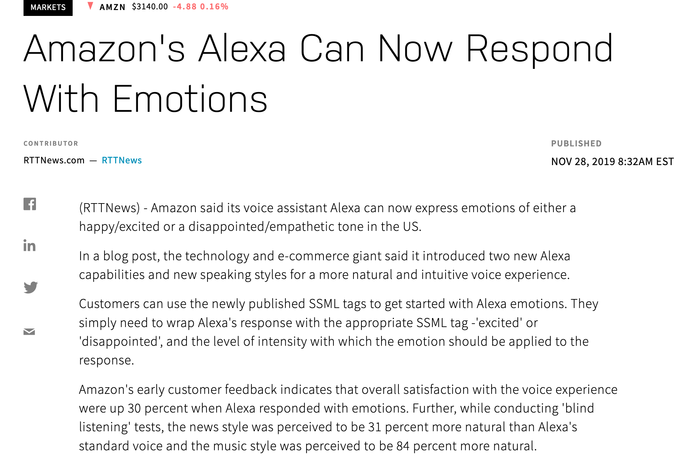

      <section>
        <h2 hidden aria-hidden="false">SSML Emotions</h2>
        <audio src="audio.oga"></audio>
        <figure>
          <a href="https://www.nasdaq.com/articles/amazons-alexa-can-now-respond-with-emotions-2019-11-28">
          
          </a>

          <figcaption>
            <p>
            But SSML brings something really important to the party -- emotions! 
            </p>

          </figcaption>
        </figure>
      </section>
